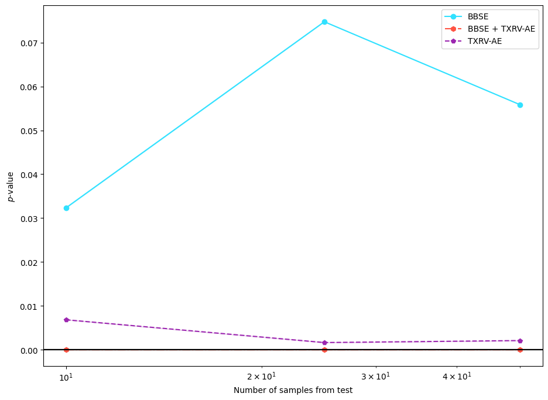
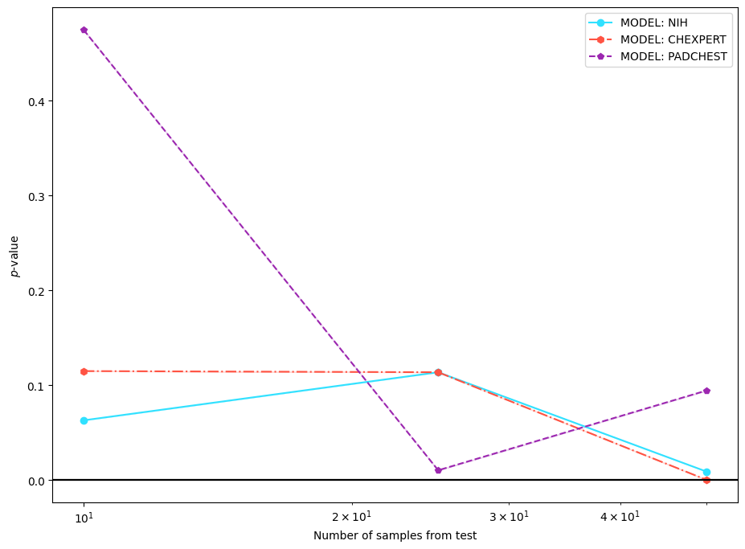
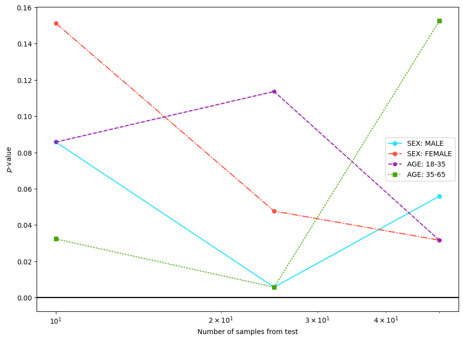
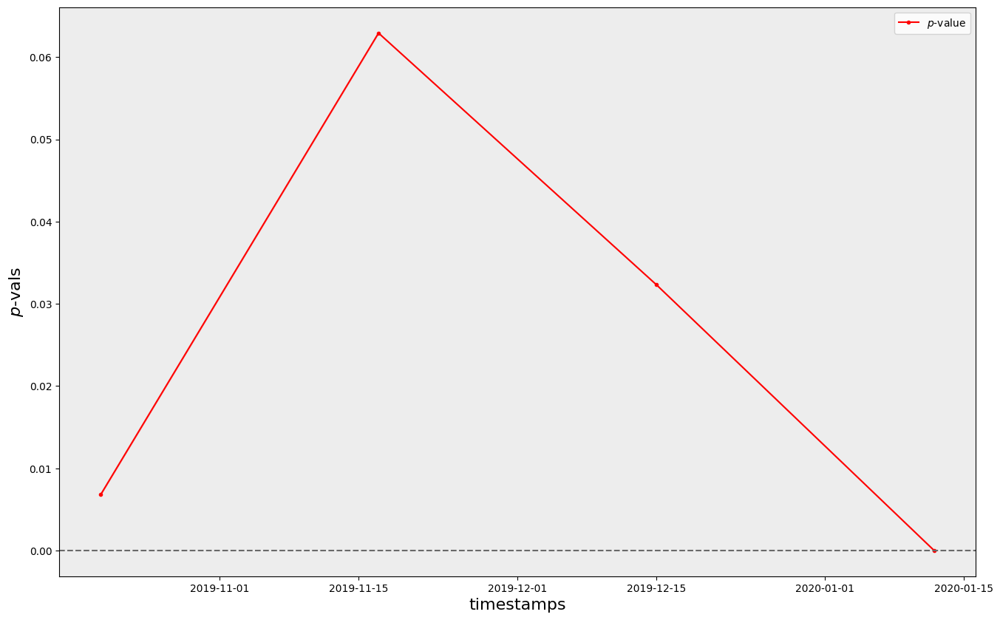

NIHCXR Clinical Drift Experiments Tutorial
Import Libraries and Load NIHCXR Dataset
[1]:
"""NIHCXR Clinical Drift Experiments Tutorial."""
import random
import numpy as np
import torch
from torchvision.transforms import Compose
from torchxrayvision.models import DenseNet
from cyclops.data.loader import load_nihcxr
from cyclops.data.slicer import SliceSpec
from cyclops.data.transforms import Lambdad, Resized
from cyclops.monitor import ClinicalShiftApplicator, Detector, Reductor, TSTester
from cyclops.monitor.plotter import plot_drift_experiment, plot_drift_timeseries
nih_ds = load_nihcxr("/mnt/data/clinical_datasets/NIHCXR")["test"]
random.seed(42)
np.random.seed(42)
torch.manual_seed(42)
[1]:
<torch._C.Generator at 0x7fb2e6edef70>
Example 1. Generate Source/Target Dataset for Experiments (1-2)
[2]:
shifter = ClinicalShiftApplicator(
"sex",
source=None,
target="F",
shift_id="Patient Gender",
)
source_ds, target_ds = shifter.apply_shift(nih_ds, num_proc=6)
transforms = Compose(
[
Resized(
spatial_size=(224, 224),
keys=("image",),
allow_missing_keys=True,
),
Lambdad(
func=lambda x: ((2 * (x / 255.0)) - 1.0) * 1024,
keys=("image",),
allow_missing_keys=True,
),
Lambdad(
func=lambda x: x[0][np.newaxis, :] if x.shape[0] != 1 else x,
keys=("image",),
allow_missing_keys=True,
),
],
)
Example 2. Sensitivity test experiment with 3 dimensionality reduction techniques
[3]:
model = DenseNet(weights="densenet121-res224-all")
dr_methods = {
"BBSE": "bbse-soft",
"BBSE + TXRV-AE": "bbse-soft+txrv-ae",
"TXRV-AE": "txrv-ae",
}
results = {}
for name, dr_method in dr_methods.items():
if name == "TXRV-AE":
reductor = Reductor(
dr_method=dr_method,
transforms=transforms,
feature_columns=["image"],
)
else:
reductor = Reductor(
dr_method=dr_method,
model=model,
transforms=transforms,
feature_columns=["image"],
)
detector = Detector(
"sensitivity_test",
reductor=reductor,
tester=TSTester(tester_method="ks"),
source_sample_size=50,
target_sample_size=[10, 25, 50],
num_runs=1,
)
result = detector.detect_shift(source_ds, target_ds)
results[name] = result
plot_drift_experiment(results)

Example 3. Sensitivity test experiment with models trained on different datasets
[4]:
models = {
"MODEL: NIH": "densenet121-res224-nih",
"MODEL: CHEXPERT": "densenet121-res224-chex",
"MODEL: PADCHEST": "densenet121-res224-pc",
}
results = {}
for model_name, model in models.items():
detector = Detector(
"sensitivity_test",
reductor=Reductor(
dr_method="bbse-soft",
model=DenseNet(weights=model),
transforms=transforms,
feature_columns=["image"],
),
tester=TSTester(tester_method="ks"),
source_sample_size=50,
target_sample_size=[10, 25, 50],
num_runs=1,
)
results[model_name] = detector.detect_shift(source_ds, target_ds)
plot_drift_experiment(results)

Example 4. Sensitivity test experiment with different clinical shifts
[5]:
model = DenseNet(weights="densenet121-res224-all")
source_slice = None
target_slices = {
"SEX: MALE": SliceSpec(spec_list=[{"Patient Gender": {"value": "M"}}]),
"SEX: FEMALE": SliceSpec(spec_list=[{"Patient Gender": {"value": "F"}}]),
"AGE: 18-35": SliceSpec(
spec_list=[{"Patient Age": {"min_value": 18, "max_value": 35}}],
),
"AGE: 35-65": SliceSpec(
spec_list=[{"Patient Age": {"min_value": 35, "max_value": 65}}],
),
}
results = {}
for name, target_slice in target_slices.items():
source_slice = None
shifter = ClinicalShiftApplicator(
"custom",
source=source_slice,
target=target_slice,
)
ds_source, ds_target = shifter.apply_shift(nih_ds, num_proc=6)
detector = Detector(
"sensitivity_test",
reductor=Reductor(
dr_method="bbse-soft",
model=model,
transforms=transforms,
feature_columns=["image"],
),
tester=TSTester(tester_method="ks"),
source_sample_size=50,
target_sample_size=[10, 25, 50],
num_runs=1,
)
results[name] = detector.detect_shift(ds_source, ds_target)
plot_drift_experiment(results)

Example 5. Rolling window experiment with synthetic timestamps using biweekly window
[6]:
model = DenseNet(weights="densenet121-res224-all")
detector = Detector(
"rolling_window_drift",
reductor=Reductor(
dr_method="bbse-soft",
model=model,
transforms=transforms,
feature_columns=["image"],
),
tester=TSTester(tester_method="ks"),
source_sample_size=50,
target_sample_size=10,
timestamp_column="timestamp",
window_size="4W",
)
results = detector.detect_shift(source_ds, target_ds)
plot_drift_timeseries(results)
